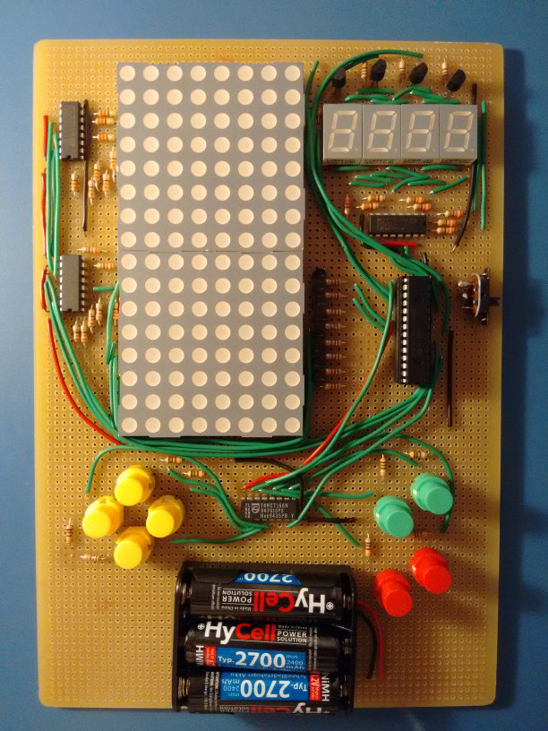
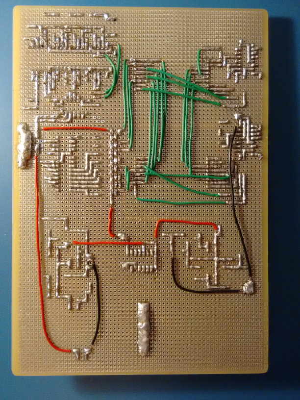
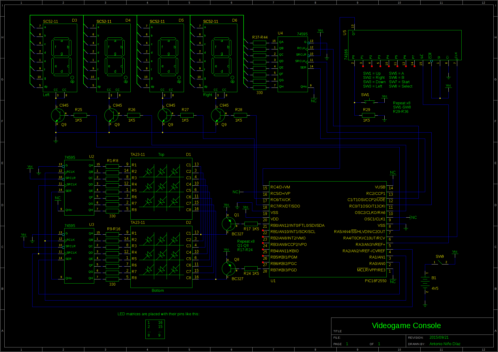

Hello again!
This time I'm writing to show you my newest electronic creation: a "videogame console" made with a PIC18F2550 as its brain. It has a 8x16 LED matrix as main display and 4 seven segment displays to show the player score, for example. It has 8 buttons (4 in a pad, the rest like a Game Boy or similar). The PIC doesn't have enough pins to control everything easily, so I've used a few 74HC595 to control the LED matrix and the seven segment displays, and a 74HC166 to read the state of all buttons.
 
The game I've decided to code for the demonstration is a simple Tetris, written in 100% assembly. YouTube video here:
https://www.youtube.com/watch?v=5fmSbreJsDI
Buttons:
- Move left/right.
- Rotate clockwise/counterclockwise.
- Go down quickly, go down instantly.
- Pause, reset.
At the moment I haven't decided if I should post the schematics and the source code for various reasons:
- I used different systems to power the LED matrix and the seven segment displays. A decent design should use the same system.
- Some resistors are too high and the LEDs, when lit, are too dim. I didn't consider the scanline refresh when calculating the resistors, so the actual intensity is a lot lower than I thought.
- The source code of the game is a bit messy (the "drivers" code is good, though).
Well, I hope you like it!
EDIT: Well, whatever, I'll just put the schematics and the code... :P
Schematics
Code
Don't expect it to be clean and/or human readable. The file 'main.asm' contains the 'drivers', and 'tetris.asm' contains the game. It's fairly easy to modify it to change some of the pin assignments.
Download (gEDA schematics + assembly code + assembled .hex file)
New version (2015/10/06), with a small modification to prevent "ghosting" between displays when performing the scanline change. Also fixed a bug that didn't remove completed lines before checking if game over.
Possible improvements
- Change pull-down resistors for the buttons (R29-R36) by 10K resistors.
- Change LED resistors (330 Ohm) by 300 or maybe 220 resistors (R1-R16 and R37-R44).
- Make the LED matrix and the seven segment displays work the same way (changing the displays by common-anode equivalents and the transistors used to drive them).